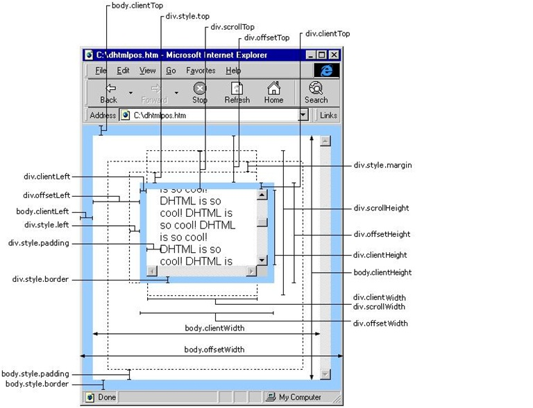

inner:测量的是一个窗口的活动文档区（以称为内容区）的高和宽；
outer:测量的是整个窗口的外边界；包括任何显示在窗口中的东西：滚动条、状态栏等；
网页可见区域宽： document.body.offsetWidth (包括边线的宽)
网页可见区域高： document.body.offsetHeight (包括边线的高)
网页正文全文宽： document.body.scrollWidth
网页正文全文高： document.body.scrollHeight
网页被卷去的高： document.body.scrollTop
网页被卷去的左： document.body.scrollLeft
网页正文部分上： window.screenTop
网页正文部分左： window.screenLeft
屏幕分辨率的高： window.screen.height
屏幕分辨率的宽： window.screen.width
屏幕可用工作区高度： window.screen.availHeight
屏幕可用工作区宽度： window.screen.availWidth
HTML精确定位:scrollLeft,scrollWidth,clientWidth,offsetWidth
scrollHeight: 获取对象的滚动高度。
scrollLeft:设置或获取位于对象左边界和窗口中目前可见内容的最左端之间的距离
scrollTop:设置或获取位于对象最顶端和窗口中可见内容的最顶端之间的距离
scrollWidth:获取对象的滚动宽度
offsetHeight:获取对象相对于版面或由父坐标 offsetParent 属性指定的父坐标的高度
offsetLeft:获取对象相对于版面或由 offsetParent 属性指定的父坐标的计算左侧位置
offsetTop:获取对象相对于版面或由 offsetTop 属性指定的父坐标的计算顶端位置
event.clientX 相对文档的水平座标
event.clientY 相对文档的垂直座标
event.offsetX 相对容器的水平坐标
event.offsetY 相对容器的垂直坐标
document.documentElement.scrollTop 垂直方向滚动的值
event.clientX+document.documentElement.scrollTop 相对文档的水平座标+垂直方向滚动的量
< !DOCTYPE html PUBLIC "-//W3C//DTD XHTML 1.0 Transitional//EN"
"http://www.w3.org/TR/xhtml1/DTD/xhtml1-transitional.dtd">
<html xmlns="http://www.w3.org/1999/xhtml">
<head>
<title>请调整浏览器窗口</title> <meta http-equiv="content-type" content="text/html; charset=utf-8">
</meta></head>
<body>
<h2 align="center">请调整浏览器窗口大小</h2><hr />
<form action="#" method="get" name="form1" id="form1">
<!--显示浏览器窗口的实际尺寸-->
浏览器窗口 的 实际高度: <input type="text" name="availHeight" size="4"/><br />
浏览器窗口 的 实际宽度: <input type="text" name="availWidth" size="4"/><br />
</form>
<script type="text/javascript">
<!--
var winWidth = 0;
var winHeight = 0;
function findDimensions() //函数：获取尺寸
{
//获取窗口宽度
if (window.innerWidth)
winWidth = window.innerWidth;
else if ((document.body) && (document.body.clientWidth))
winWidth = document.body.clientWidth;
//获取窗口高度
if (window.innerHeight)
winHeight = window.innerHeight;
else if ((document.body) && (document.body.clientHeight))
winHeight = document.body.clientHeight;
//通过深入Document内部对body进行检测，获取窗口大小
if (document.documentElement && document.documentElement.clientHeight && document.documentElement.clientWidth)
{
winHeight = document.documentElement.clientHeight;
winWidth = document.documentElement.clientWidth;
}
//结果输出至两个文本框
document.form1.availHeight.value= winHeight;
document.form1.availWidth.value= winWidth;
}
findDimensions();
//调用函数，获取数值
window.onresize=findDimensions;
//-->
</script>
</body>
</html>